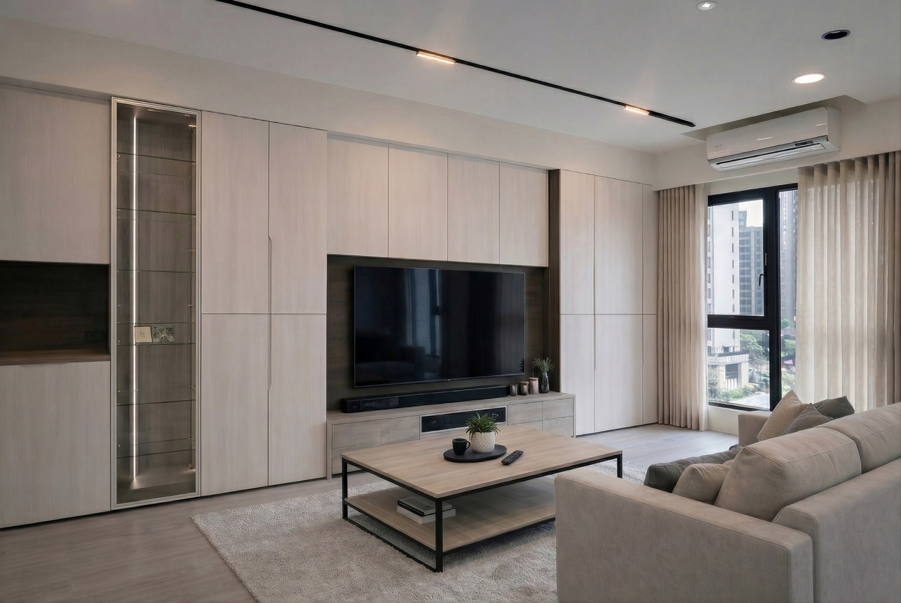

2026 禾久推薦：新手也不出錯的 7 大質感配色法則
「為什麼設計師配的顏色看起來很高級，我自己選的色號刷起來卻像幼兒園？」

在禾久室內設計與許多屋主溝通的經驗中，我們發現「色彩」是裝修中最令人頭痛、卻也最能立竿見影改變家氛圍的要素。色彩不僅是視覺的填充，更是情感的載體。一個好的配色計畫，能讓 15 坪的小宅顯得寬敞通透，也能讓大坪數空間擁有沈靜的包覆感。
進入 2026 年，居家風格趨向「感官放鬆」與「自然融合」。今天，禾久要與大家分享新手也能輕鬆上手的 7 大質感配色法則，教您如何透過精準的色彩計畫，打造出百看不膩的理想家。

室內色彩要平衡，必須掌握空間比例。禾久在規劃案場時，通常遵循以下分配：
- 60% 基礎色（Base）：天花板、大面積牆面。通常選擇輕盈的中性色，如暖白、淺灰。
- 30% 輔助色（Secondary）：大型家具、櫃體、地板。這是定義風格的關鍵。
- 10% 強調色（Accent）：抱枕、五金、局部跳色牆。這是展現個性與精緻度的地方。

很多屋主怕配色失敗，乾脆全家都刷白色。其實，最好的配色不是只有一種顏色，而是「同色系的堆疊」。
例如在禾久熱門的「奶茶風」中，我們會利用奶茶色漆面搭配淺橡木地板，再輔以長虹玻璃與霧面金屬。即便色調接近，卻能透過材質的光澤與紋理差異，創造出豐富的立體感。

今年的流行趨勢不再是高彩度的撞色，而是加入了灰調的「低飽和色彩」。
無論是沈穩的莫蘭迪藍、優雅的微醺粉，還是治癒感十足的灰豆綠，這些色彩因為帶有灰色基底，能完美包容室內的陰影變化，即便在不同採光下，依然能維持極高的高級感。

我們常說「五金是空間的珠寶」。在我們的配色清單中，古銅金、啞光鎳、香檳金是常客。選擇與牆面色調契合的金屬零件，能瞬間提升裝修的「含金量」。
此外，隱藏式踢腳板設計，能消除地面與牆面交接處的視覺雜訊，讓配色更純粹、更俐落。

顏色在不同色溫下會有截然不同的表現。
在禾久的裝修學堂裡，我們建議公領域使用 4000K 自然光以呈現精準色號，私領域則用 3000K 暖光來軟化色彩邊緣。好的色彩計畫，必須搭配正確的燈光計畫，才能發揮 100% 的效果。

配色沒有標準答案，只有最適合您的生活方式。在接下來的系列文章中，禾久將深入拆解 7 套 2026 年經典配色方案，從清新的奶油風到沈穩的大人系可可色，每一篇都附上精確的得利乳漆色號、地板材質與五金搭配。
不論您是準備裝修的新手，還是想要為老屋翻新的屋主，都歡迎跟著禾久的腳步，在色彩的世界裡找尋最令您心動的那一抹風景。